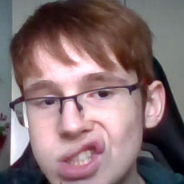

Over ons


Rita Kuo
十八年前台灣的首都，台北的一家院 我出生了。我的興趣是打遊戲，寫程式，健身，聽音樂，玩樂器。當然還有馬術，但因為某次摔馬後我必須要休養一陣子不能騎馬。拖到現在都還不能去報名。不過 anyway，我現在在荷蘭讀中學。一間名為ROC Flevoland的中學。對 沒錯 我是讀資工的...女孩。 我喜歡這個科系，所以讀得很快樂。
O'nyll Heyliger
Mijn naam is O'nyll Heyliger ik ben 21 juli 2002 geboren in het flevoziekenhuis. Ik woon mijn hele leven al in almere maar ben wel 3 keer verhuisd. ik zit op de opleiding software development op ROC flevoland. Mijn hobbies zijn anime kijken games spelen en muziek luisteren. Ik heb wat sporten gedaan zoals kickboksen en freerunnen maar nu doe ik niks. andere dingen over mij zijn ik hou van knuffels en schattige dingen en ik hou ook van horror films omdat ze grappig zijn.Lynn van Dam
Ik ben Lynn van Dam. Ik ben geboren op 8 December 2003 in het Flevoziekenhuis in Almere, waar ik nog steeds woon.Mijn hobbies zijn gamen, tekenen en schrijven, en ik hou erg van kijken naar films/series en video's op YouTube. Ook luister ik veel naar muziek.
Ik doe de opleiding Software Development op het ROC van Flevoland in Almere. De opleiding is soms een uitdaging maar wel erg leuk.